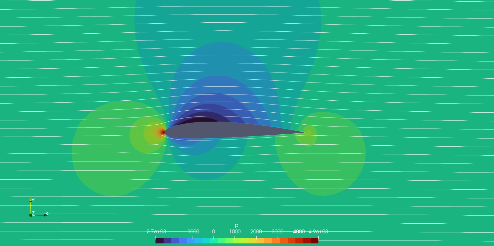
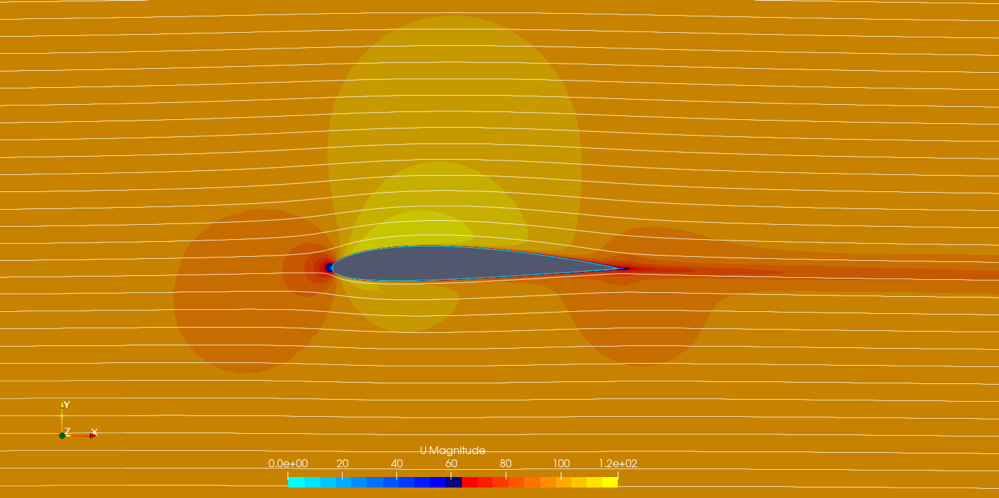
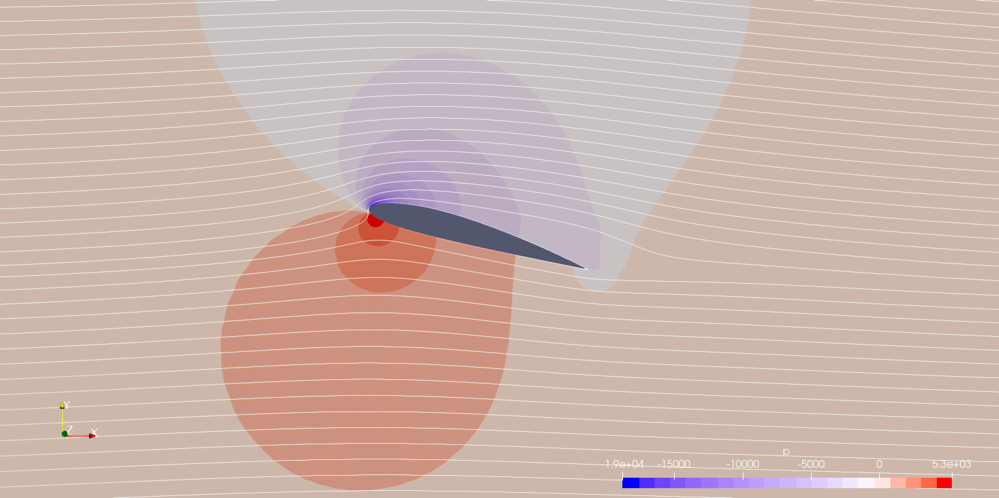
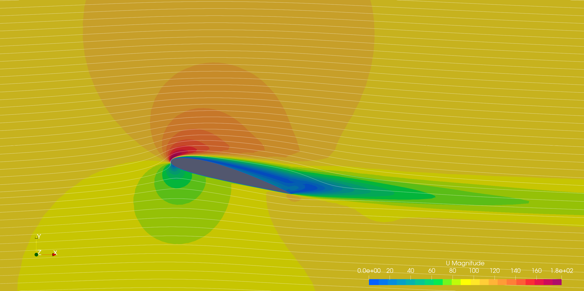
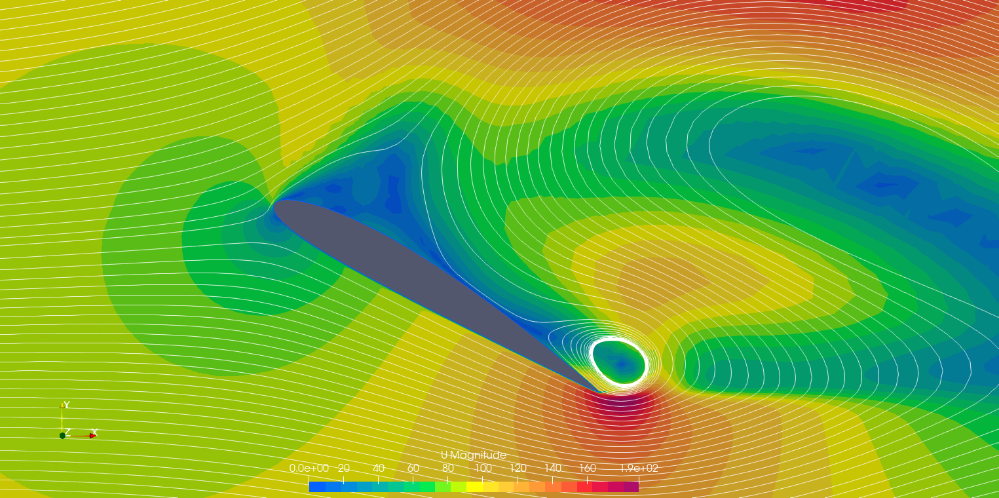
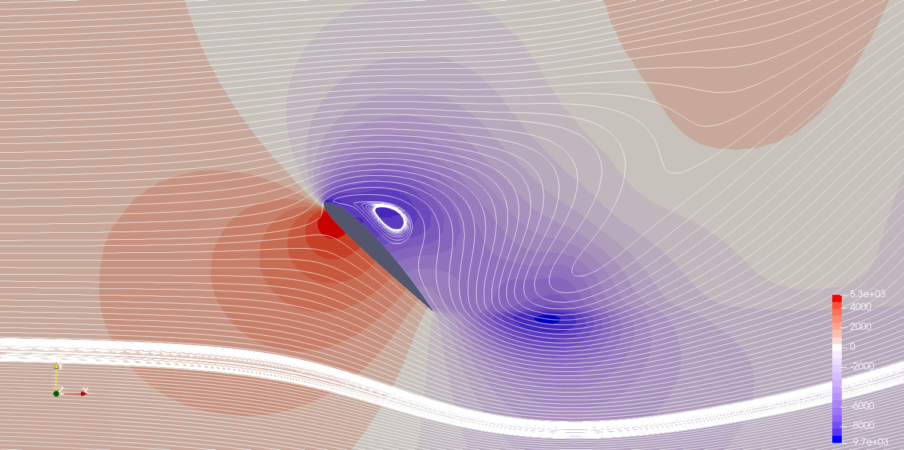
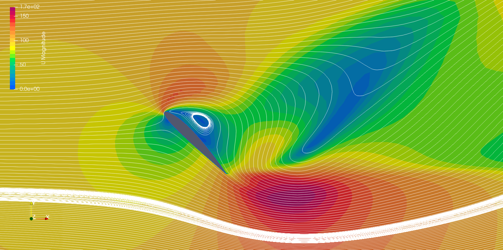
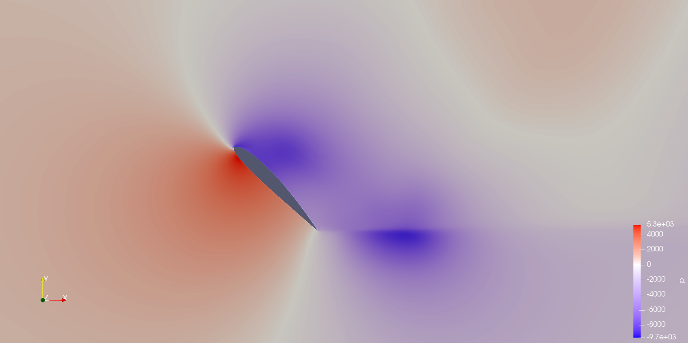
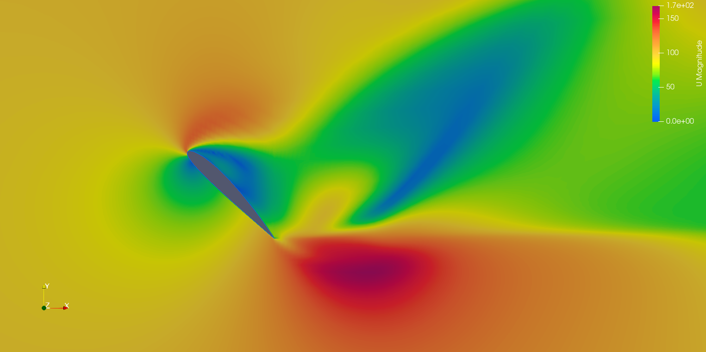

Computational Fluid Dynamics · OpenFOAM RANS Simulation · Personal Project
Role
Individual — CFD Setup, Meshing & Post-Processing
Personal Project · OpenFOAM
Tools
OpenFOAM (simpleFoam, blockMesh) ParaView
Key Contributions
Built a blockMesh O-topology grid and ran a steady RANS (k-ω SST) angle-of-attack sweep from 0° to 45°
Captured the full stall progression — attached flow, suction-dominated near-stall, deep stall, and bluff-body vortex shedding
Extracted and interpreted surface Cp distributions against expected cambered-airfoil behavior
Diagnosed the steady solver's convergence breakdown at high AoA and identified the correct follow-up solver
6.8×10&sup6;
Reynolds Number
0°→45°
Angle-of-Attack Sweep
k-ω SST
Turbulence Closure
4
Flow Regimes Captured
This page walks through a steady RANS angle-of-attack sweep on a NACA 2412 airfoil in OpenFOAM, from the attached-flow baseline through full bluff-body stall. Design Decision callouts highlight the judgment calls made along the way — particularly around how far to trust a steady solver as the flow separates.
Project Overview
I ran a series of steady incompressible RANS simulations on a NACA 2412 airfoil — 2% max camber at 40% chord, 12% max thickness — across four angles of attack (0°, 15°, 30°, 45°) using OpenFOAM's simpleFoam solver. The goal was to trace the complete aerodynamic lifecycle of a cambered airfoil: clean attached flow, the leading-edge suction peak that builds toward stall, the leading-edge separation of deep stall, and the bluff-body vortex shedding that takes over once the airfoil stops behaving like a wing at all.
Mesh: structured blockMesh O-topology grid, with the airfoil physically rotated for each AoA case so the inflow direction stays fixed along the domain axis
Solver:simpleFoam (SIMPLE algorithm) — steady, incompressible, with the k-ω SST turbulence model for near-wall and adverse-pressure-gradient behavior
Boundary conditions: fixed-velocity inlet, no-slip airfoil wall with wall functions on k and ω, zero-gradient outlet referenced to 0 Pa gauge, slip/symmetry far-field
Flow conditions: freestream velocity ≈ 99 m/s, unit chord, Re ≈ 6.8×106 — fully turbulent regime
Pressure is reported in OpenFOAM's native kinematic units (p/ρ, m²/s²); the pressure coefficient throughout is Cp = p / q∞, with q∞ ≈ 4,908 m²/s²
Design Decision
Trade-off: Re-meshed the domain for each AoA by rotating the airfoil within a fixed O-grid, rather than rotating the inlet velocity vector against a single static mesh.
Why: Rotating the velocity vector would have left skewed inlet/outlet patches relative to the flow direction at every case but the baseline. Re-meshing per case keeps the inlet and outlet boundary conditions clean and axis-aligned at the cost of regenerating the grid four times instead of once — a worthwhile trade for boundary-condition simplicity and solution accuracy.
Case: α = 0° — Attached Flow Baseline
Even with zero geometric incidence, the airfoil's 2% camber (zero-lift AoA ≈ −2.1°) produces a measurable suction-side lift through asymmetric circulation. The flow stagnates exactly at the leading edge (x/c = 0, Cp = +1.0) and accelerates sharply around the convex upper surface, reaching a suction peak of Cp,min ≈ −0.557 at x/c = 0.22. Even the lower surface shows mild suction over its first 30% chord — camber accelerates flow on both surfaces near the nose, with the upper surface always winning out to produce net lift.
Boundary layer fully attached, with a smooth, moderate adverse pressure gradient toward the trailing edge
Velocity field confirms the pressure result: local velocity at the suction peak runs ~25% above freestream, matching the inviscid Bernoulli estimate
Thin, symmetric wake — the signature of a low-drag, fully attached configuration

Fig. 1: Pressure field, α = 0° — leading-edge stagnation and upper-surface suction peak at x/c = 0.22

Fig. 2: Velocity magnitude field, α = 0° — thin attached boundary layer and narrow symmetric wake
At 15°, NACA 2412 is operating close to its maximum lift coefficient. The leading-edge suction peak has intensified dramatically to Cp,min ≈ −3.6, implying a local velocity over twice freestream (≈212 m/s) at the peak. The stagnation point has also migrated — rather than sitting at the geometric nose, it now sits on the lower leading edge, displaced by the angled incoming flow. This is the most aerodynamically efficient point in the sweep: high lift at moderate drag, but riding right at the edge of separation.
Pressure differential across the airfoil reaches roughly 24,300 m²/s² (kinematic) — the dominant lift-generating mechanism at this incidence
Streamlines pack tightly over the upper surface, consistent with the contracted stream-tube implied by the suction peak
Early signs of trailing-edge boundary-layer thickening, the first hint of the separation that fully develops by 30°

Fig. 3: Pressure field, α = 15° — intense leading-edge suction (Cp,min ≈ −3.6), stagnation point displaced to the lower leading edge

Fig. 4: Velocity magnitude field, α = 15° — elongated, deflected wake and high-speed upper-surface flow
By 30°, leading-edge separation is fully established. The sharp suction peak from the 15° case has collapsed into a broad, nearly uniform low-pressure plateau (Cp,base ≈ −0.8 to −1.2) covering most of the upper surface — the signature of a separated dead-air region rather than attached flow. A large standing wake vortex appears immediately downstream of the trailing edge in both the pressure and velocity fields; this is the steady-RANS mean-flow approximation of what is physically an unsteady shed vortex.
Lift mechanism shifts from upper-surface suction to high pressure on the windward lower surface — increasingly flat-plate-like behavior
L/D collapses from a cruise-like 15–20 down to roughly 0.5–2 in this regime
Steady RANS convergence is marginal here — results are qualitatively but not quantitatively reliable
Fig. 5: Pressure field, α = 30° — leading-edge separation with a standing wake vortex and a broad low-pressure plateau on the upper surface

Fig. 6: Velocity magnitude field, α = 30° — large recirculation zone and separated shear layer from the leading edge
At 45° the airfoil no longer behaves aerodynamically as a wing — it behaves as a bluff body. The near-field pressure plot shows alternating high- and low-pressure regions in a staggered pattern downstream, the signature of a von Kármán-type vortex street. Because this physics is inherently time-periodic, the steadysimpleFoam solver cannot converge: the force history oscillates between roughly 4,800 N and 13,100 N well past 500 iterations rather than settling to a fixed value. The extended-domain views resolve a cleaner mean structure — a high-pressure region on the windward face and a deep suction base (Cp,base ≈ −1.0 to −2.0), comparable to a circular cylinder's base pressure at high Re.
Persistent large-amplitude force oscillation is itself diagnostic evidence of unsteady physics, not just a failed solve
Multi-vortex wake structure visible in the near-field velocity plot; wake width at one chord downstream already rivals the chord length
Pressure drag now dominates entirely — the streamlined shape provides no benefit at this incidence

Fig. 7: Pressure field (near-field), α = 45° — alternating vortex-street pressure signature in the wake

Fig. 8: Velocity magnitude field (near-field), α = 45° — multi-vortex wake with counter-rotating structures

Fig. 9: Pressure field (extended domain), α = 45° — windward high-pressure / leeward base-suction dipole, characteristic of bluff-body flow

Fig. 10: Velocity magnitude field (extended domain), α = 45° — wake growth and blockage at one chord downstream
Trade-off: Continued the sweep through 45° with the steady solver despite knowing the flow physics had become inherently unsteady, rather than switching to a transient solver once separation appeared.
Why: The goal of this study was to map the qualitative regime transition across the full stall progression, not to extract quantitative loads at high AoA. The steady solver's failure to converge at 45° is itself useful diagnostic evidence of the underlying vortex-shedding physics. For accurate forces in the separated regimes, the correct follow-up is a transient solver (pimpleFoam) or scale-resolving approach (DES/LES) — noted as the next step rather than worked here.
Surface Pressure Coefficient — α = 0°
Surface pressure data extracted from the converged α = 0° solution confirms the field-plot interpretation quantitatively. The enclosed area between the upper and lower surface Cp curves is proportional to section lift — a large gap between the curves means meaningful lift; identical curves would mean zero lift.
Location
Upper Surface Cp
Lower Surface Cp
Leading edge (x/c ≈ 0)
+1.00 (stagnation)
+0.654 (x/c = 0.004)
Suction peak
−0.557 at x/c = 0.22
−0.363 at x/c = 0.046
Mid-chord
−0.390 (x/c = 0.50)
−0.199 (x/c = 0.25)
Trailing edge
+0.136
+0.152
The upper-surface suction peak sits at x/c = 0.22 — just aft of the nose and ahead of the geometric maximum-thickness location (x/c ≈ 0.30) — consistent with inviscid panel-method predictions for this camber distribution. The lower surface shows a smaller, secondary suction region near its own leading edge: camber forces the streamlines to curve concavely on the underside too, just less aggressively than on top. Both surfaces recover to positive Cp by the trailing edge, with the small remaining difference between them (Cp,upper = 0.136 vs. Cp,lower = 0.152) confirming the Kutta condition is satisfied and bound circulation is present.
Comparative Analysis Across the Sweep
Stepping back across all four cases shows a clean progression from potential-flow-like behavior to fully separated bluff-body flow — and a corresponding decline in how much the steady RANS solution can be trusted.
Parameter
α = 0°
α = 15°
α = 30°
α = 45°
Flow regime
Attached
Near-stall
Deep stall
Bluff body
Cp,min (upper)
−0.557
≈ −3.6
Plateau ≈ −1.0
Dipole structure
Stagnation point
At x/c = 0
Lower leading edge
Lower surface
Lower windward face
Boundary layer
Fully attached
TE thickening
LE separation
Complete separation
Steady RANS validity
High
Moderate
Low
Very low
Recommended solver
simpleFoam
simpleFoam
pimpleFoam
pimpleFoam / DES
The widening colorbar range at higher AoA in the raw ParaView plots reflects intensifying pressure gradients as more flow energy is redirected into circulation and ultimately lost to the separated wake. Across every case, the suction side always does more aerodynamic work than the pressure side — a fundamental characteristic of low-speed aerodynamics.
Key Takeaways
Camber Produces Lift at Zero Incidence
Even at α = 0°, the 2% camber of NACA 2412 generates a clear suction-side pressure asymmetry. This matched thin-airfoil theory's prediction of a non-zero lift coefficient at zero geometric incidence for a cambered section, confirming the simulation was physically sound before pushing into higher-AoA cases.
Stagnation Point Migration Tracks Circulation
Across the sweep, the stagnation point visibly migrates from the geometric leading edge (0°) to deep on the lower surface (45°). That migration is a direct, visual proxy for growing bound circulation — a useful sanity check that didn't require any post-processing to read off the plots.
RANS Validity Degrades Past Stall
Steady RANS is trustworthy through 15°, but the standing-vortex and bluff-body regimes at 30–45° are qualitative only. Recognizing where a solver's assumptions stop holding — rather than reporting unconverged numbers as if they were valid — is as important as the solve itself.
Mesh Artifacts vs. Physical Features
The circular "halo" structures visible in the far-field of several plots are inter-block boundaries in the O-grid topology, not physical flow features — ParaView's color interpolation simply switches discretely across mesh-block interfaces. Telling numerical artifacts apart from real flow structures is a basic but essential post-processing skill.